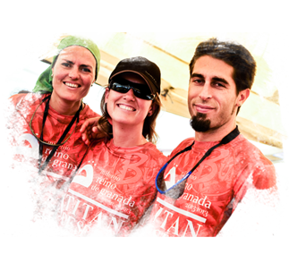

¿Quieres formar parte del equipo organizativo de la GAES TITAN DESERT BY GARMIN como voluntario?
Únete al grupo humano que forma parte del staff de la GAES TITAN DESERT by GARMIN y vive desde dentro la carrera por etapas más épica del mundo. Una experiencia única en Marruecos, con más de 80 miembros de organización destinados a hacer más fácil el sueño de los ‘titanes'.
Requisitos:
- Tener como mínimo 18 años de edad el día de inicio de carrera.
- Ser amante del mundo del deporte y del ciclismo.
- Espíritu aventurero.
- Ganas de pasarlo bien.
- Pasaporte en vigor.